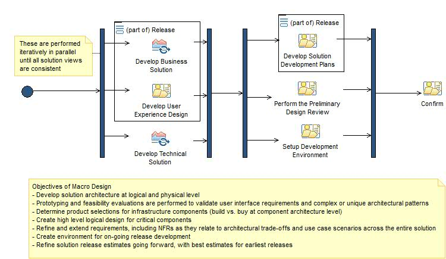

| Phase: Macro Design |
 |
|
| Description | Work Breakdown Structure | Team Allocation | Work Product Usage | ||||||
Workflow
|  |
Work Breakdown
| © Copyright IBM Corp. 1987, 2012 All Rights Reserved Property of IBM These materials are intended only for use as part of an IBM engagement |